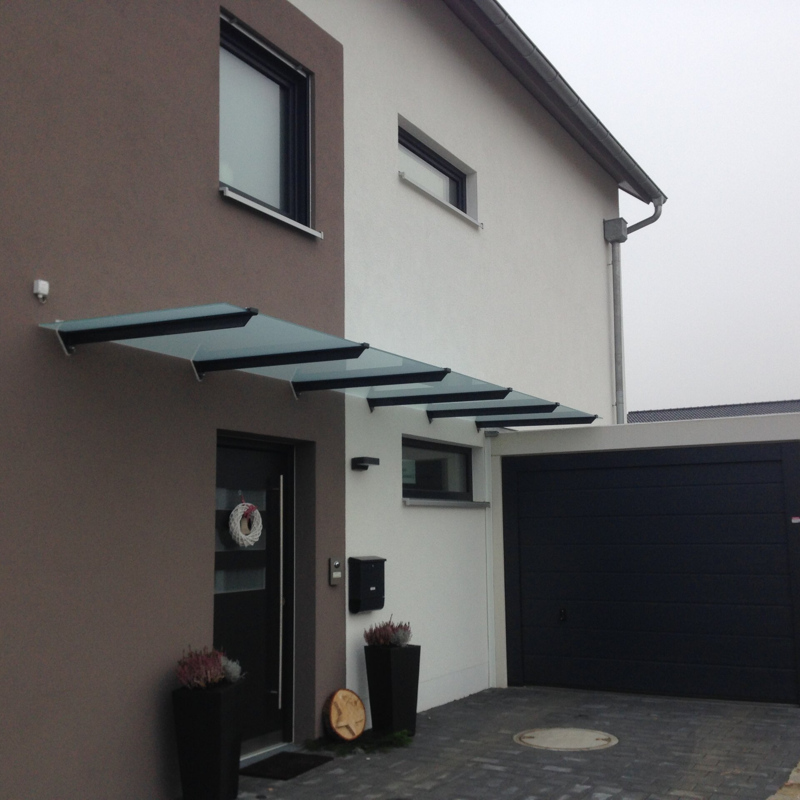
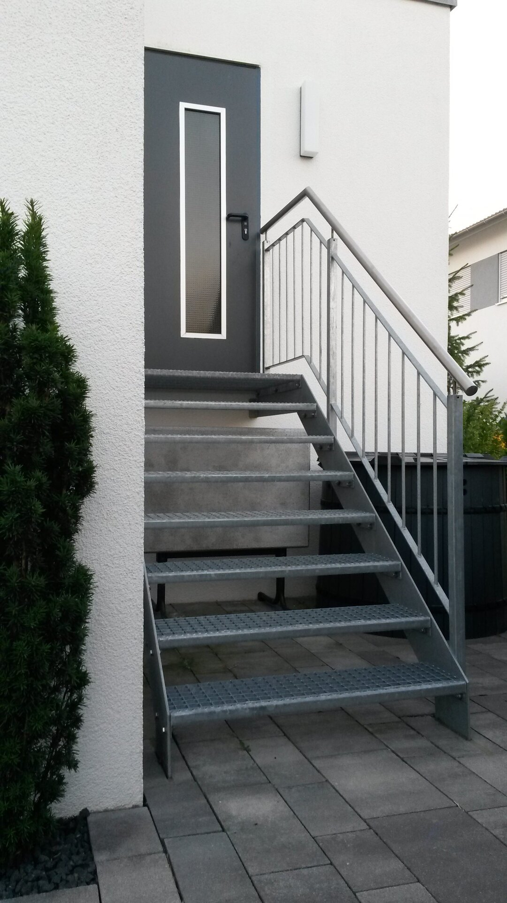
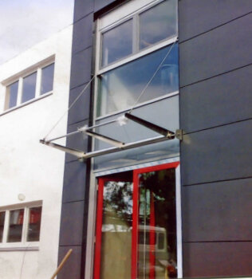
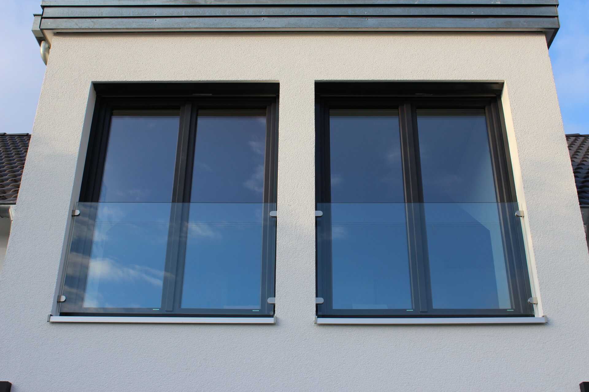
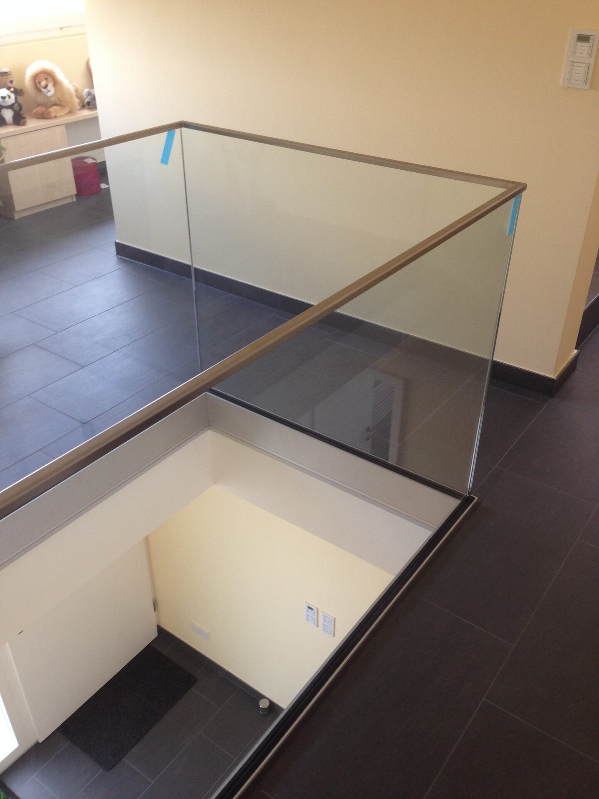
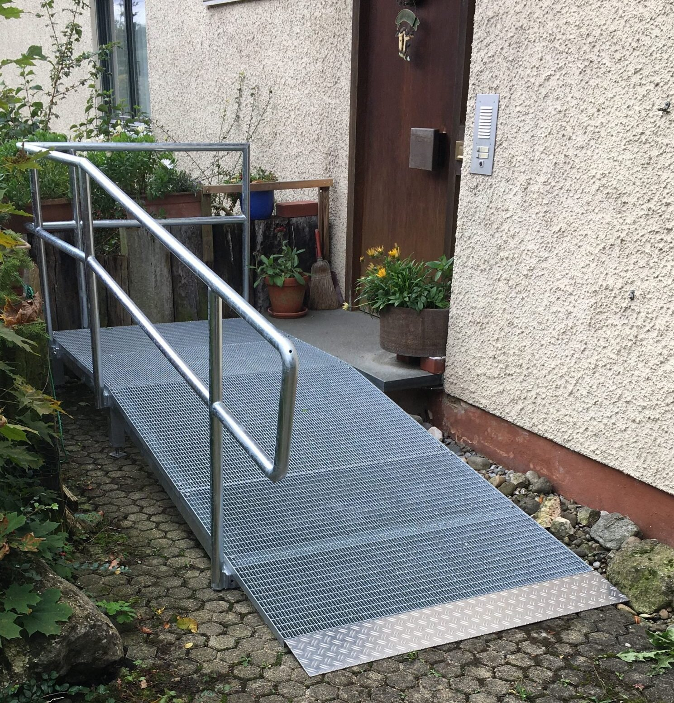
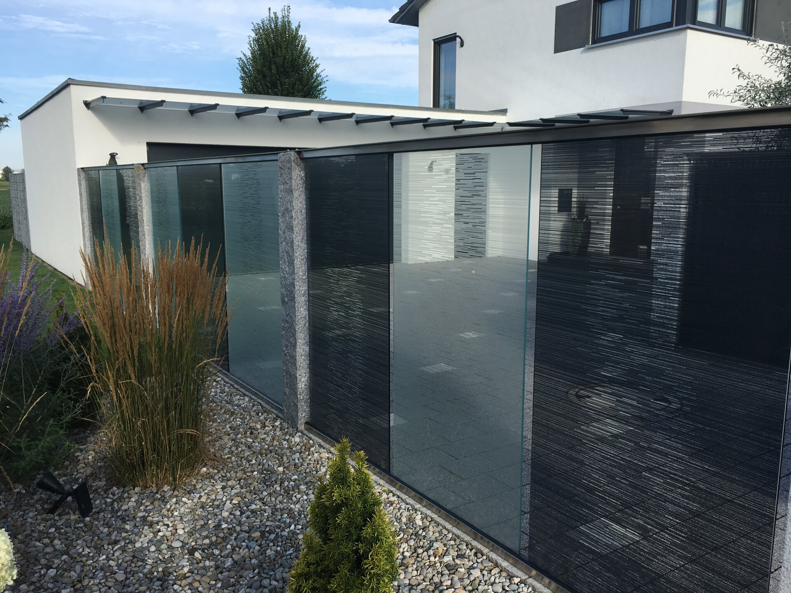
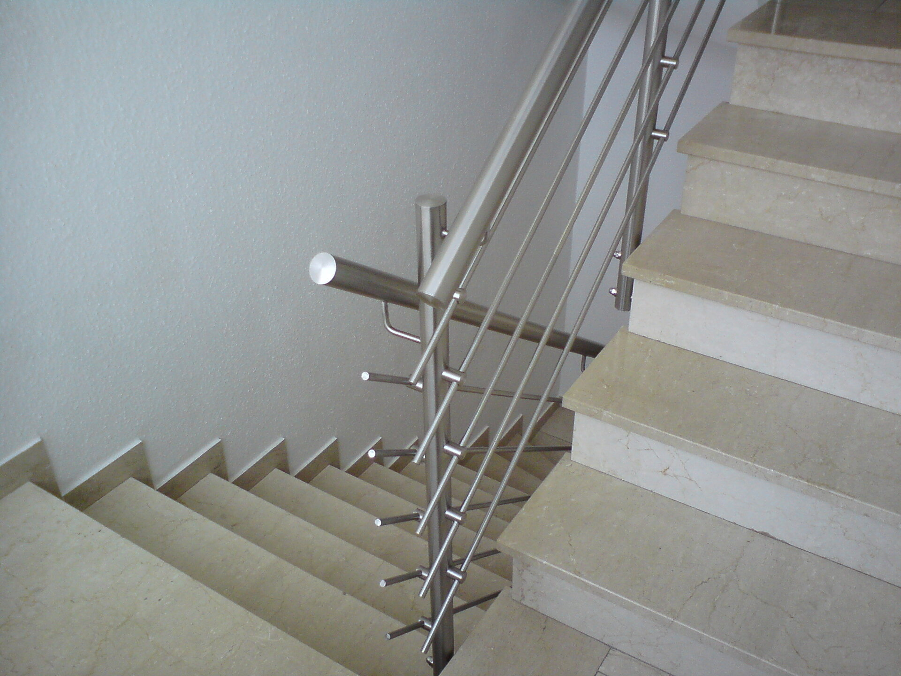
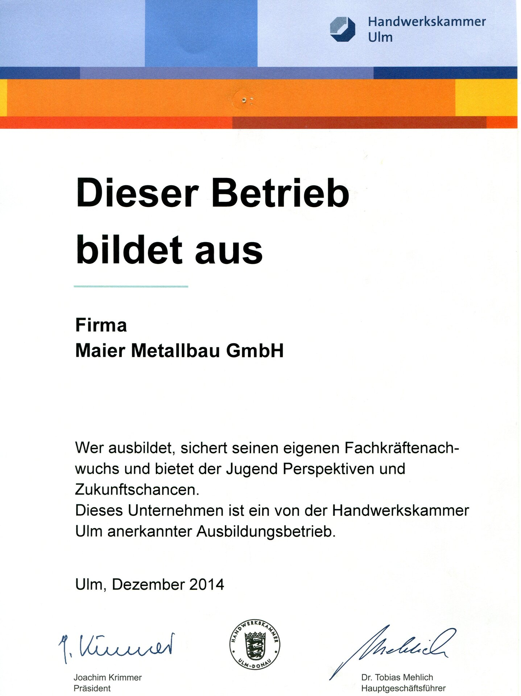
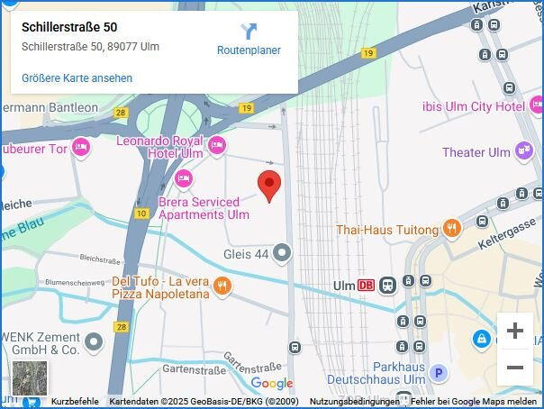

Familienbetrieb in 3. Generation
Metallbau mit Präzision in Edelstahl, Aluminium und Stahl
Wir planen und fertigen nach Ihren Vorstellungen – für Privatkunden, öffentliche Auftraggeber und Industrie. Qualität, Zuverlässigkeit und saubere Ausführung stehen bei uns an erster Stelle.
- Edelstahl · Stahl · Aluminium
- Planung & Montage
- Sonderlösungen & Einzelstücke



Herzlich willkommen bei Maier Metallbau
Wir sind ein mittelständischer Familienbetrieb und führen unsere Schlosserei bereits in der 3. Generation. Mit jahrzehntelanger Erfahrung planen und fertigen wir individuell nach den Wünschen unserer Kunden – von Einzelstücken bis zu kompletten Anlagen.
Unsere Kunden: Privatkunden, Kommunen und Industrie, u. a. DB Deutsche Bahn, Stadtwerke Ulm/Neu-Ulm, Staatliches Hochbauamt, Stadt Ulm/Neu-Ulm, Bantleon GmbH, OTIS, ThyssenKrupp, REWE und Noerpel Logistik.
Team: 4 Metallbau-Meister · 1 Geselle · 2 Auszubildende · 1 kaufmännische Angestellte.
Öffnungszeiten
Tel. 0731 63784
Leistungen
Vielseitiges Angebot – individuelle Lösungen
Wir fertigen Balkone, Treppen, Geländer, Vordächer, Türen, Briefkastenanlagen, Sonderkonstruktionen und mehr. Jeder Auftrag wird geplant, konstruiert und fachgerecht montiert.

Balkone & Geländer
Stahl, Edelstahl oder Aluminium mit Glas, Lamellen oder Trespa-Füllungen.

Treppen & Brüstungen
Innen- und Außentreppen, Glasgeländer, Stahlwangen, Gitterroststufen.

Vordächer & Überdachungen
Wetterschutz in Edelstahl, verzinktem oder pulverbeschichtetem Stahl mit Glas.

Französische Balkone
Absturzsicherungen mit Glasfüllungen und Edelstahlhaltern.

Gartentüren & Hoftore
Freitragende Tore, Gartentüren, Briefkastenanlagen, Trespa-Füllungen.

Briefkastenanlagen
Freistehend oder integriert, Edelstahl- und Stahlkonstruktionen.

Sonderkonstruktionen
Sichtschutz, Blumenkübel, Regale, Rampen und individuelle Lösungen.
Galerie
Projektimpressionen aus unseren wichtigsten Leistungsbereichen.
Einblicke
Ausgewählte Referenzen







Ausbildung
Metallbauer (m/w/d) – Fachrichtung Konstruktionstechnik
Für Herbst 2026 suchen wir interessierte und engagierte Auszubildende. Metallbauer fertigen und montieren Überdachungen, Fassaden, Tore, Fensterrahmen und Sonderkonstruktionen. Du arbeitest nach Zeichnung, schweißt, nietest und montierst vor Ort.
- Handwerkliches Geschick und technisches Verständnis
- Sorgfalt und räumliches Vorstellungsvermögen
- Gute körperliche Konstitution
Bewerbung per Post oder E-Mail an Schlosserei-Maier@freenet.de
Details zur Ausbildung
Kontakt
Wir freuen uns auf Ihre Anfrage
Maier Metallbau GmbH
Schillerstr. 50, 89077 Ulm
Tel. 0731 63784 · E-Mail: Schlosserei-Maier@freenet.de
